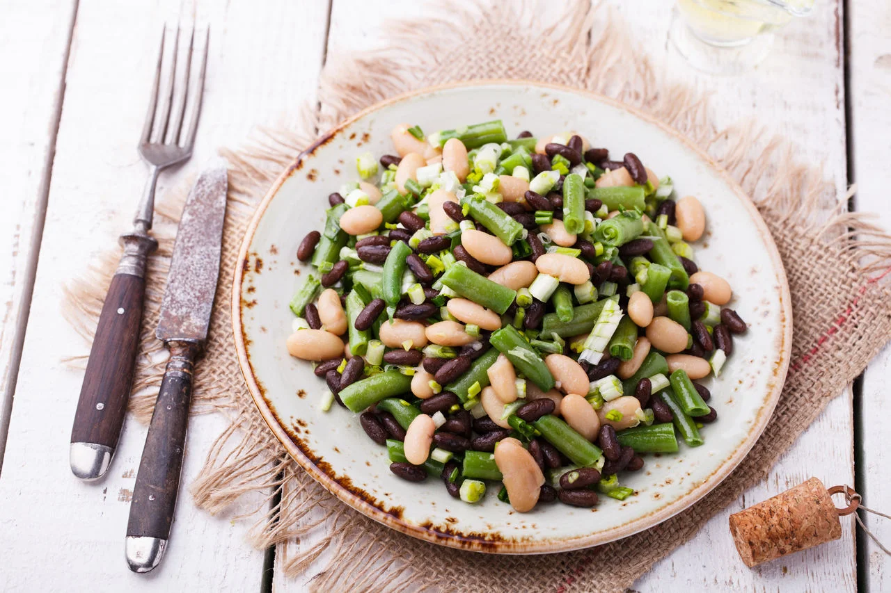

Salada mix de leguminosas

Ingredientes
- 2,0 dentes de Alho cru
- 2,0 colheres (sopa) de Azeite de oliva extravirgem
- 1,0 unidade média de Cebola
- 2,0 colheres (sopa) rasas picadas de Cebolinha crua
- 2,0 colheres (sopa) picadas de Coentro fresco
- 2,0 conchas médias cheias de Feijão branco cozido
- 2,0 conchas médias cheias de Feijão fradinho cozido
- 2,0 conchas médias cheias de Feijão preto cozido
- 2,0 conchas médias cheias de Grão de bico cozido
- 1,0 unidade de Sumo de limão
- 0,5 unidades médias de Pimentão amarelo cru
- 0,5 unidades médias de Pimentão verde cru
- 1,0 pitada de Sal refinado
- 1,0 unidade média de Tomate
Modo de preparo
- Em uma travessa, misture os feijões e o grão de bico já cozidos em água com sal, aos demais ingredientes picados em cubos.
- Adicione o coentro, a cebolinha, o sal, o azeite e o vinagre.
- Misture bem e leve a geladeira por 20 minutos.
- Sirva frio
Tabela Nutricional
| Calorias |
Carboidratos |
Proteínas |
Gorduras Totais |
Gord. Saturadas |
Gord. Trans |
Fibras |
Sódio |
| 146,30 kcal |
23,49 g |
7,66 g |
2,76 g |
0,41 g |
0,00 g |
9,81 g |
109,30 mg |